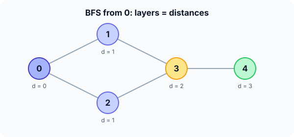

Prerequisites
- Graph representations.
- Queue (FIFO).
- Arrays used as "visited" flags.
The analogy
Everyday analogy
Drop a stone in a pond: the ripple reaches everything 1 metre away, then 2 metres, then 3, in rings.
BFS spreads from the start vertex the same way. A queue keeps the ring order: everything at distance 1 is processed before anything at distance 2.
How it works
Precondition: BFS distances are shortest paths only when every edge counts as 1 (unweighted graph). For weights, use Dijkstra.
Start with one BFS by hand
Graph: 0–1, 0–2, 1–3, 2–3, 3–4 (undirected). Start at 0 with the queue [0]; neighbours are checked in increasing order. Predict, then open "Check".
Example: predict before you read
Step 1. Dequeue 0. Predict which vertices are enqueued and their distances.
Check
1 and 2, both at distance 1. Queue: [1, 2].
Step 2. Cover the next line and guess: dequeue 1, then 2. What gets enqueued?
Check
From 1: vertex 3 (distance 2). From 2: 3 is already discovered, so nothing. Queue: [3].
Step 3. Dequeue 3, then 4. Predict the final visit order and distances.
Check
From 3: vertex 4 at distance 3. Visit order 0, 1, 2, 3, 4; distances 0, 1, 1, 2, 3.

Quick recall: Before reading further, cover the text above and say out loud: why was vertex 3 not enqueued twice?
Check your answer
It was marked as discovered when 1 enqueued it, so when 2 saw it, it was skipped.
Finish the picture: the shortest path itself
Store, for each vertex, the vertex that discovered it (its parent).
- Parents. Predict the parent of 3 and of 4.
Check
parent(3) = 1 (1 found it first), parent(4) = 3.
- Path to 4. Predict the shortest path from 0 to 4 by following parents backwards.
Check
4 → 3 → 1 → 0, reversed: 0, 1, 3, 4. Three edges, matching distance 3.
Quick recall: Without scrolling up, say out loud: in BFS, why are all distance-1 vertices processed before any distance-2 vertex?
Check your answer
The queue is FIFO: distance-1 vertices were enqueued first, and distance-2 vertices are only added while processing them.
The rule in plain words
Put the start in a queue with distance 0 and mark it. Repeatedly dequeue a vertex and, for each unmarked neighbour, mark it, set distance = current + 1, and enqueue it.
Mark vertices when they are enqueued, not when dequeued, so nobody enters the queue twice.
Quick recall: Before you read the code, write the BFS loop in your own words. Then check below.
Check your answer
Take the vertex at the front of the queue. For each neighbour not yet discovered, set its distance to this vertex's distance + 1 and add it to the back of the queue. Repeat until the queue is empty.
The code
Read this code after you have done the BFS by hand. It will make more sense.
void bfs(int adj[][5], int n, int s, int dist[]) {
int queue[100];
int head = 0, tail = 0;
for (int i = 0; i < n; i++) dist[i] = -1; /* -1 = not discovered */
dist[s] = 0;
queue[tail++] = s;
while (head < tail) {
int u = queue[head++]; /* oldest discovered vertex */
for (int v = 0; v < n; v++)
if (adj[u][v] && dist[v] == -1) { /* undiscovered neighbour */
dist[v] = dist[u] + 1;
queue[tail++] = v;
}
}
}Definition
What you just did, in one line: breadth-first search explores a graph layer by layer from a start vertex, using a queue, and finds the fewest-edges distance to every reachable vertex.
graph LR
0((0)) --- 1((1))
0 --- 2((2))
1 --- 3((3))
2 --- 3
3 --- 4((4))
How fast is it?
Quick recall: Before looking at the formula, predict: on adjacency lists, how many times is each edge examined in total?
Check your answer
Twice in an undirected graph, once from each endpoint, so the work is $O(V + E)$.
Each vertex is enqueued and dequeued once, and each adjacency list is scanned once when its vertex is dequeued:
$$O\Big(V + \sum_{v} \deg(v)\Big) \;=\; O(V + 2E) \;=\; O(V + E)$$With an adjacency matrix, as in the code above, each dequeue scans a whole row, giving $O(V^2)$.
| Measure | Cost | Why |
|---|---|---|
| Time (adjacency lists) | $O(V + E)$ | Each vertex and edge handled once |
| Time (adjacency matrix) | $O(V^2)$ | Each dequeue scans a full row |
| Extra space | $O(V)$ | Queue, distances, visited flags |
| Shortest path (unweighted) | Yes | Layers are reached in order of distance |
Warning
Marking a vertex as visited only when it is dequeued lets it be enqueued several times; on dense graphs the queue can then hold $O(E)$ entries instead of $O(V)$.
Exam tip
BFS gives shortest paths in an unweighted graph; DFS does not. If edges have different weights, the answer is Dijkstra, not BFS.
Common mistakes
- Using a stack instead of a queue, which turns BFS into DFS and loses the shortest-path property.
- Marking vertices on dequeue instead of on enqueue.
- Using BFS distances on a weighted graph.
Try it yourself
Exercise 1 (warm-up)
In the graph 0–1, 0–2, 1–3, 2–3, 3–4, run BFS from vertex 2. Give the distances of 0, 1, 3, 4.
Hint
2's neighbours are 0 and 3.
Answer
d(0) = 1, d(3) = 1, d(1) = 2, d(4) = 2.
Exercise 2 (a bit harder)
A 3 × 3 grid maze: you start in the top-left cell and can move up, down, left and right; the centre cell is a wall. What is the BFS distance to the bottom-right cell, and how many shortest paths are there? Write your answer down before you open it.
Show answer
Distance 4 (two moves right and two down, around the wall). There are 2 shortest paths: along the top row then down the right column, or down the left column then along the bottom row.
Did you know?
Did you know?
BFS was first described by Konrad Zuse in 1945 and rediscovered by Edward Moore in 1959 to find the shortest path out of a maze.
"Six degrees of separation" and LinkedIn's "2nd-degree connection" are BFS distances in a social graph.
Key points to remember
If you remember one thing from each line, remember the because.
- BFS explores in layers because its queue processes vertices in the order they were discovered.
- It finds shortest unweighted paths because every vertex is first reached from the layer just before it.
- It runs in $O(V + E)$ on lists because each vertex is enqueued once and each edge is checked a constant number of times.
- Vertices are marked on enqueue because that stops duplicates from entering the queue.
- Parents give the actual path because each parent is one step closer to the start.
Self-check questions
Answer these in order, out loud. They follow the page, so your answers become the script of your video.
- How is BFS like ripples on a pond?
Sample answer
It reaches everything one step away, then two steps, then three, in rings around the start.
- Walk through BFS from 0 on the graph 0–1, 0–2, 1–3, 2–3, 3–4.
Sample answer
Visit 0; enqueue 1 and 2 (distance 1); 1 adds 3 (distance 2); 2 adds nothing new; 3 adds 4 (distance 3). Order 0, 1, 2, 3, 4.
- Why does the code set
dist[v]when enqueuing rather than when dequeuing?A good answer mentions vertex 3 in the example.
Sample answer
Setting it at enqueue marks v as discovered at once, so when 2 also sees 3, it is skipped and 3 enters the queue only once.
- So what is BFS, in one sentence?
Sample answer
A queue-based traversal that explores a graph layer by layer from a start vertex.
- Why does BFS give shortest paths in unweighted graphs but not in weighted ones?
A good answer says what a "layer" counts.
Sample answer
Layers count edges. With weights, a path with more edges can be cheaper, so the first time BFS reaches a vertex is not necessarily the cheapest way.
- What are BFS's time and space costs?
Sample answer
$O(V + E)$ time on adjacency lists ($O(V^2)$ on a matrix) and $O(V)$ extra space.
- How do you recover the actual shortest path, not just its length?
Sample answer
Store each vertex's parent when it is discovered, then follow parents from the target back to the start and reverse.
- If you had to teach this to a friend in 2 minutes, what would you leave out, and why?
Sample answer
I'd leave out the matrix-versus-list cost and the marking detail. I'd keep the ripple analogy, the 5-vertex example with layers, and "queue, layers, shortest path in edges, $O(V + E)$".
External resources
- VisuAlgo: DFS and BFS: run BFS on your own graph and watch the queue.
- GeeksforGeeks: BFS: code and applications.
- Wikipedia: Breadth-first search: history, analysis and uses.
- MIT OCW 6.006: lecture on BFS.
Videos
- YouTube search: BFS explained: pick a walkthrough with the queue drawn.